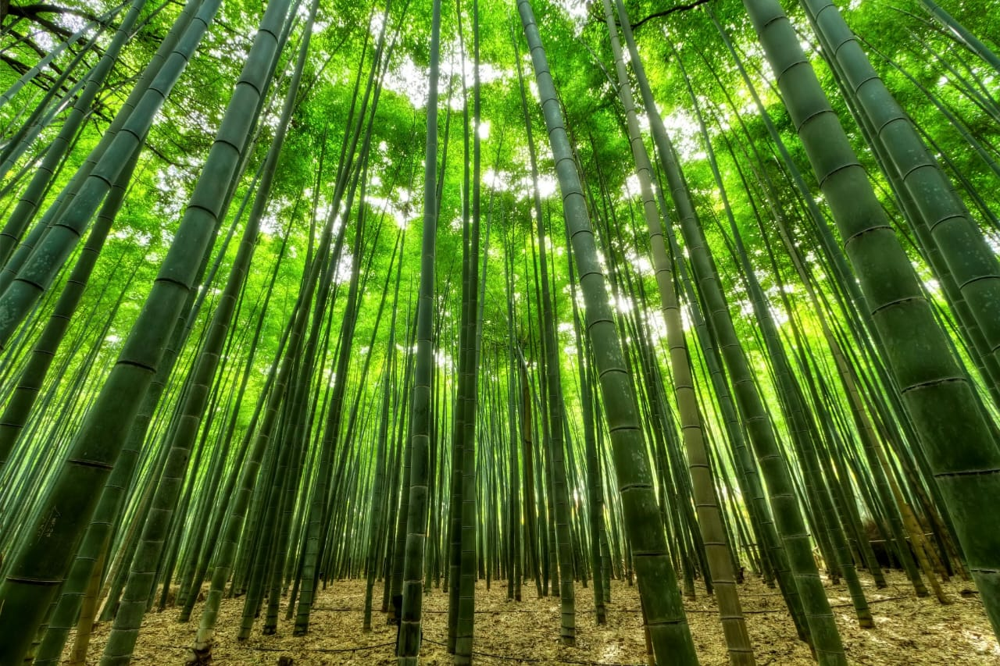

Producto
Cepillo de Dientes de Bambú
Nuestro cepillo ecológico está diseñado para cuidar tus dientes y encías, su composición es ideal para quienes buscan una opción sostenible y amigable con el planeta. Está hecho de bambú biodegradable, con cerdas de fibra de carbono de bambú. Precio: $13.000 COP.
Quienes somos
En ECO-SMILE, tres mentes apasionadas se unieron para cambiar la manera en que cuidamos nuestra sonrisa y el planeta. Somos más que una empresa, somos una comunidad que cree en el poder de lo ecológico. Con nuestros cepillos de bambú, te invitamos a dar un paso hacia un futuro más verde, sin renunciar a la calidad ni al estilo. Juntos, hacemos que cada sonrisa cuente para el planeta.
1Misión
Promover un estilo de vida ecológico y sostenible al ofrecer cepillos de dientes innovadores y elaborados a base de carbono de bambú que cuentan con materiales renovables y biodegradables.
2Visión
Convertir a EcoSmile en una de la empresas líderes a nivel nacional en la higiene oral amigable con el medio ambiente con principios y valores que se basan en la búsqueda del éxito.
Valores corporativos

Sostenible
Responsabilidad
Innovación
Calidad
Blog
¡Sonríe con la naturaleza! Descubre los mágicos beneficios del bambú y la fibra de carbono para tu higiene bucal
¿Alguna vez te has preguntado cómo algo tan simple como un cepillo de dientes puede hacer una gran diferencia en tu sonrisa y en el planeta? ¡Pues prepárate para enamorarte de los nuevos materiales que están revolucionando la forma en que cuidamos nuestros dientes!
El bambú: un abrazo de la naturaleza para tus dientes
Imagina cepillarte con un cepillo hecho de un material tan suave y natural como el bambú. ¡Es como darle un abrazo a tus dientes cada mañana! El bambú es una planta maravillosa que crece súper rápido y sin necesidad de pesticidas, por lo que es súper amigable con el medio ambiente. Además, tiene propiedades antibacterianas naturales que ayudan a mantener tu cepillo más limpio y a combatir el mal aliento. ¡Así que no solo cuidas tus dientes, sino que también cuidas el planeta!
La fibra de carbono: fuerza y elegancia para una sonrisa radiante
Si buscas un cepillo de dientes que combine resistencia y estilo, la fibra de carbono es tu mejor opción. Este material súper fuerte y ligero hace que tu cepillo sea casi indestructible y te permite llegar a todos los rincones de tu boca sin esfuerzo. Además, su superficie lisa dificulta que se acumulen bacterias, así que tendrás una sensación de limpieza profunda y duradera. ¡Y lo mejor de todo es que los cepillos de fibra de carbono suelen tener diseños súper modernos y elegantes que te harán sonreír cada vez que te mires en el espejo!
¿Por qué elegir bambú o fibra de carbono?
- Sostenibilidad: Al elegir un cepillo de bambú o fibra de carbono, estás reduciendo tu huella de plástico y contribuyendo a un futuro más sostenible.
- Salud bucal: Ambos materiales ofrecen propiedades antibacterianas naturales que ayudan a prevenir enfermedades bucales y a mantener una sonrisa radiante.
- Durabilidad: Los cepillos de bambú y fibra de carbono son más duraderos que los cepillos de plástico tradicionales, lo que significa que tendrás que cambiarlos con menos frecuencia.
- Diseño: ¡Hay una gran variedad de diseños y colores para elegir! Encontrarás el cepillo perfecto para tu estilo.
¡Únete a la revolución de la higiene bucal natural!
Cambia tu cepillo de dientes tradicional por uno de bambú o fibra de carbono y descubre la diferencia. ¡Tus dientes y el planeta te lo agradecerán!
Consejos extra para una sonrisa radiante:
- Cambia tu cepillo cada 3 meses: Aunque los cepillos de bambú y fibra de carbono sean más duraderos, es importante cambiarlos regularmente para garantizar una limpieza efectiva.
- Utiliza hilo dental a diario: El hilo dental es esencial para eliminar la placa y los restos de comida que el cepillo no alcanza.
- Visita al dentista regularmente: Los chequeos regulares son fundamentales para mantener una buena salud bucal.
¡Anímate a compartir tu experiencia con nosotros!
¿Ya has probado los cepillos de bambú o fibra de carbono? Cuéntanos cómo te ha ido en los comentarios.